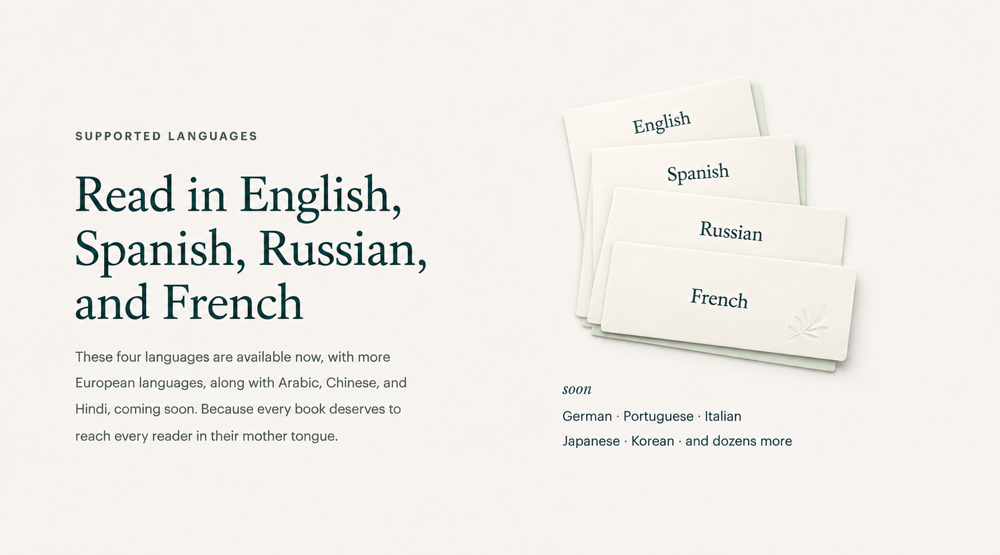
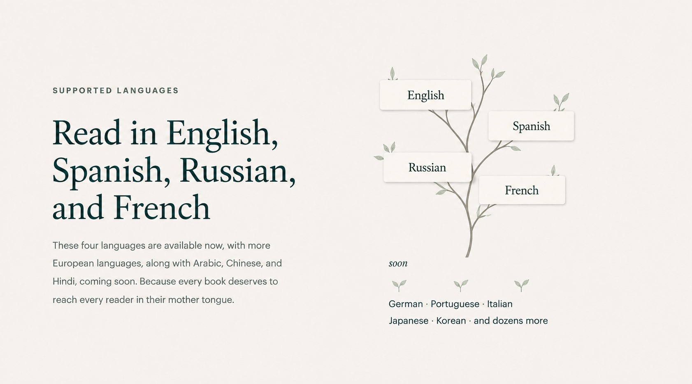
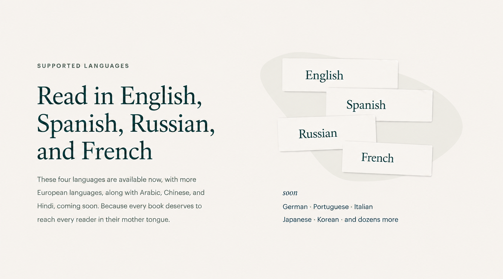
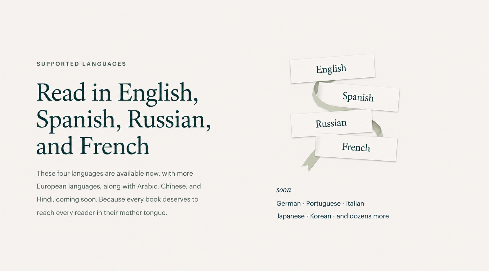
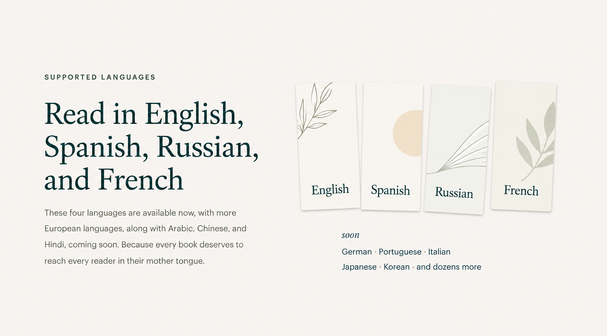
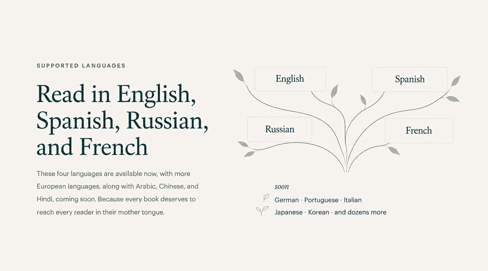
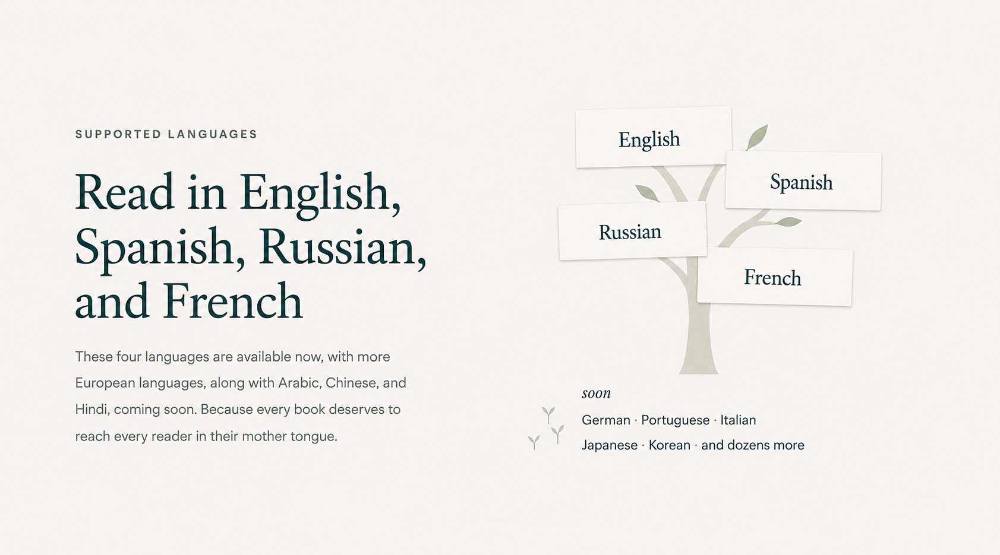
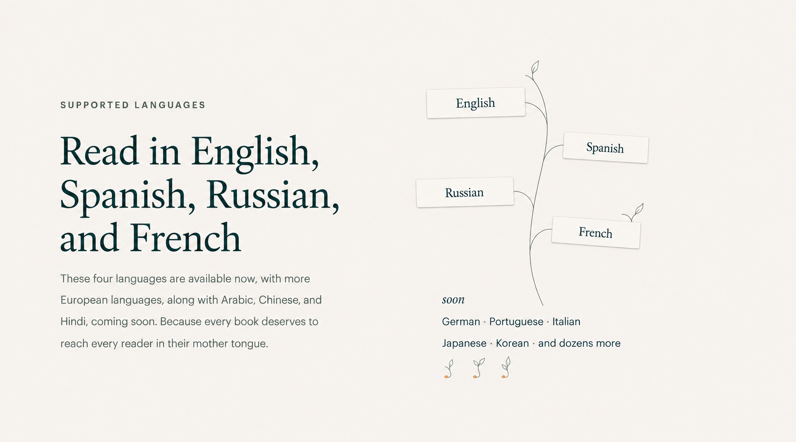
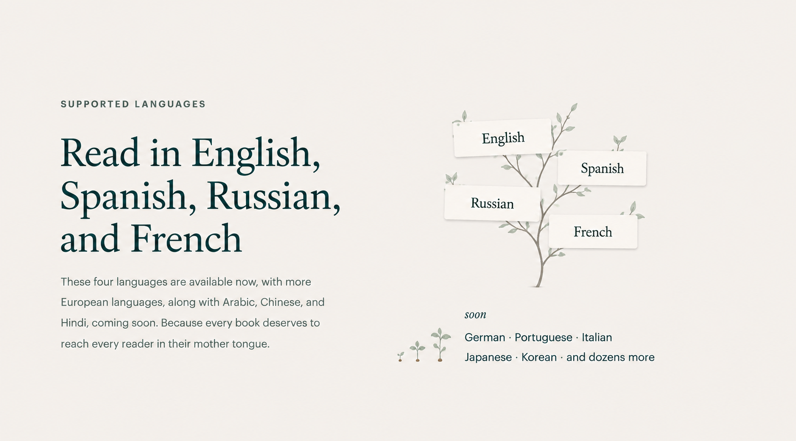
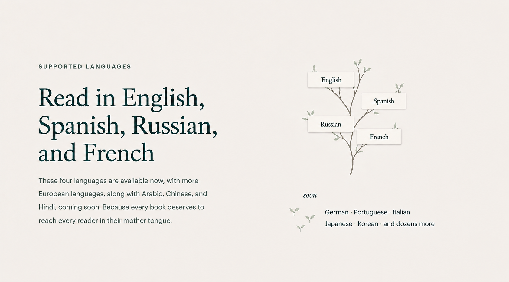

{kind=link}
{kind=link}

Веер страниц
Цельная бумажная композиция; объём и крупные плоскости делают её тяжелее остальных.
Globoox · визуальное исследование · 6 сентября 2026
Карточки, книжные мотивы и деревья с «созревшими» языками. Восемь самостоятельных вариантов и дополнительные итерации после сравнения.

Естественное редкое ветвление связывает карточки и оставляет названия главным. Зрелое дерево и молодые ростки ясно различают доступные языки и soon.
Каждое изображение показано целиком. Нажатие открывает исходный PNG; рядом сохранён точный промпт.

Цельная бумажная композиция; объём и крупные плоскости делают её тяжелее остальных.

Светлая подложка собирает карточки; её абстрактная форма пока мало связана с чтением.

Понятная связь с книгой и хороший ритм; лента местами выглядит подарочным декором.

Второе перспективное направление: современная книжная графика. Рисункам нужна общая логика, а карточкам — меньший масштаб.
Самая ясная связь карточек и роста; дереву полезны меньший масштаб и более свободная группа ростков.

Красивые чистые линии, но широкая крона и одинаковые прямоугольники напоминают схему.

Метафора считывается сразу; широкий ствол делает иллюстрацию чуть слишком буквальной.

Запасной графический язык: самый лёгкий рисунок и деликатный цвет семян. Вытянутый стебель пока напоминает схему.

Попытка уплотнить композицию: крона стала перегруженнее, а ростки — крупнее. Это промежуточная итерация.

Карточки стали слишком маленькими, а текст soon сместился к внешнему краю. Исходный «Молодой сад» лучше держит баланс.
{kind=link}
{kind=link}
{kind=link}
{kind=link}
{kind=link}
{kind=link}
{kind=link}
{kind=link}